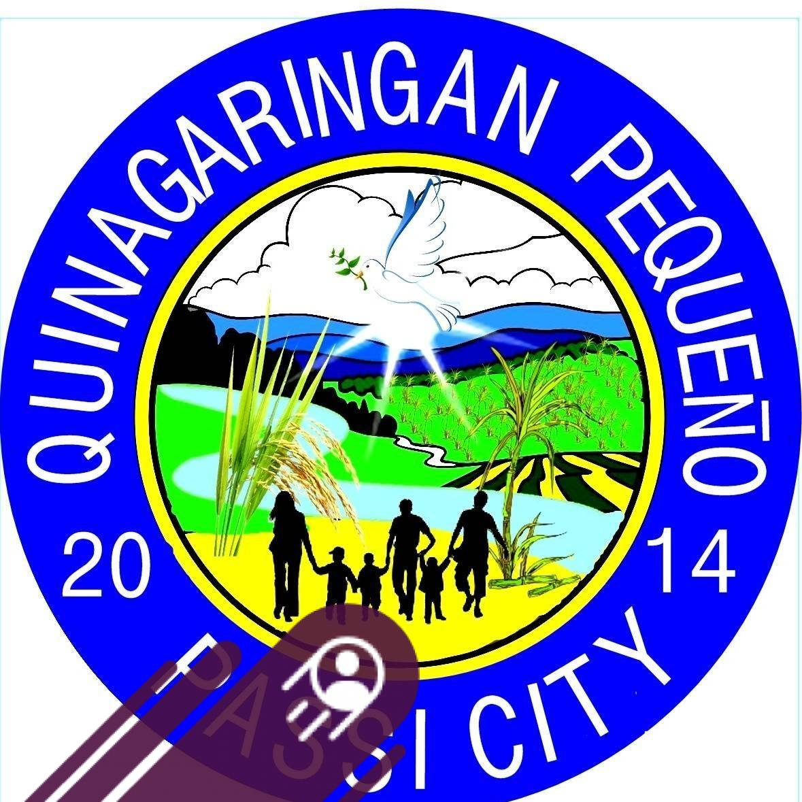

Passi City, Iloilo
We warmly welcome you to the official website of Barangay Quinagaringan Pequeño. This platform is created to provide our residents with easy access to important information, announcements, and public services.
Our barangay is committed to transparency, unity, and continuous development to serve the community better. Together, we build a stronger and more connected community.